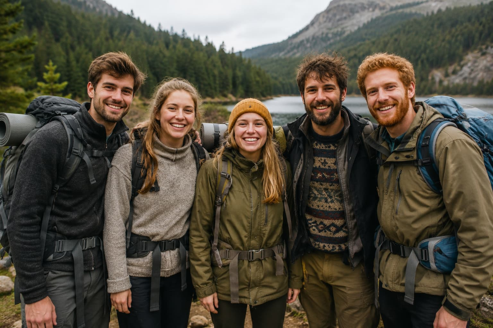

About us

Image generated using ChatGPT (OpenAI), 2026.
Our Story
We are a group of camping enthusiasts, originally from the city of Liberec in the mountainous North Bohemia region.
Most of us started off on this journey when we were children, accompanied and guided by another group of similarly minded people.
Two decades of our experience include mountain tracks, campfires, wild swimming, pictoresque castles, majestic sunrises and unforgettable wild animal encounters.
As we grew older we realised that these adventures have left with us more than any other holiday we had ever been on and decided to share the joy with others who might not have been as lucky as us to experience them.
We started offering our first guided trips to the Jizerske mountains in 2018 and since then we have broadened our scope to include the nature reserves Cesky Raj and Sumava, and the Czech side of the Black forest on the borders with Germany.